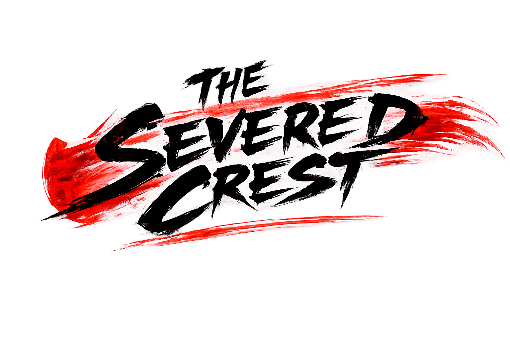
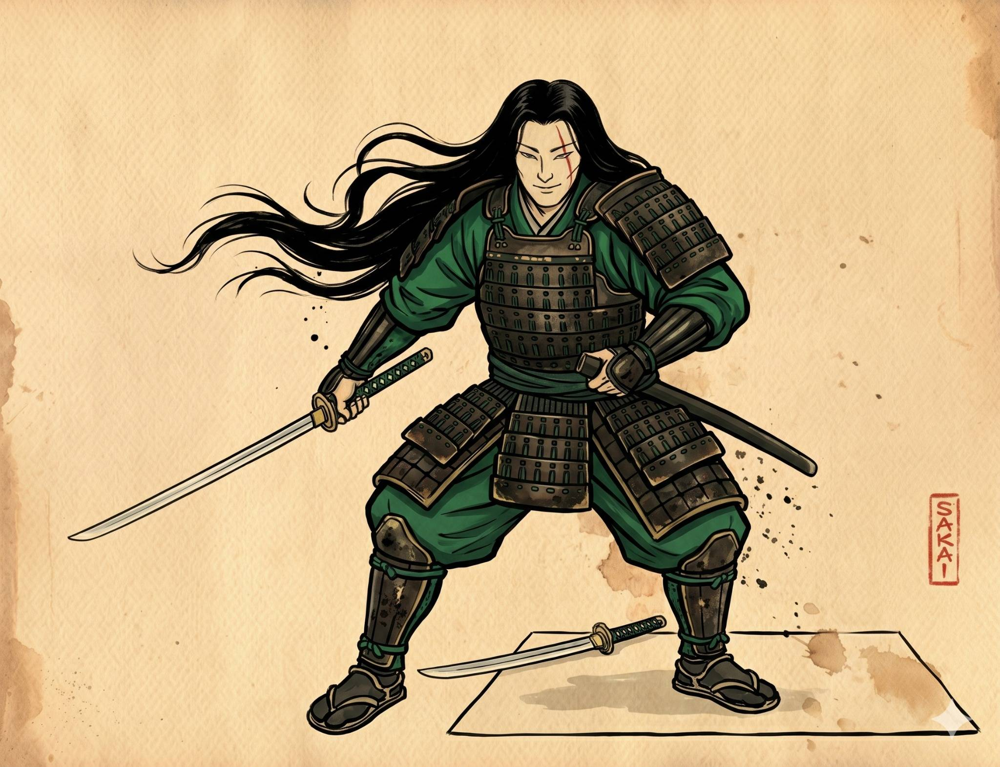
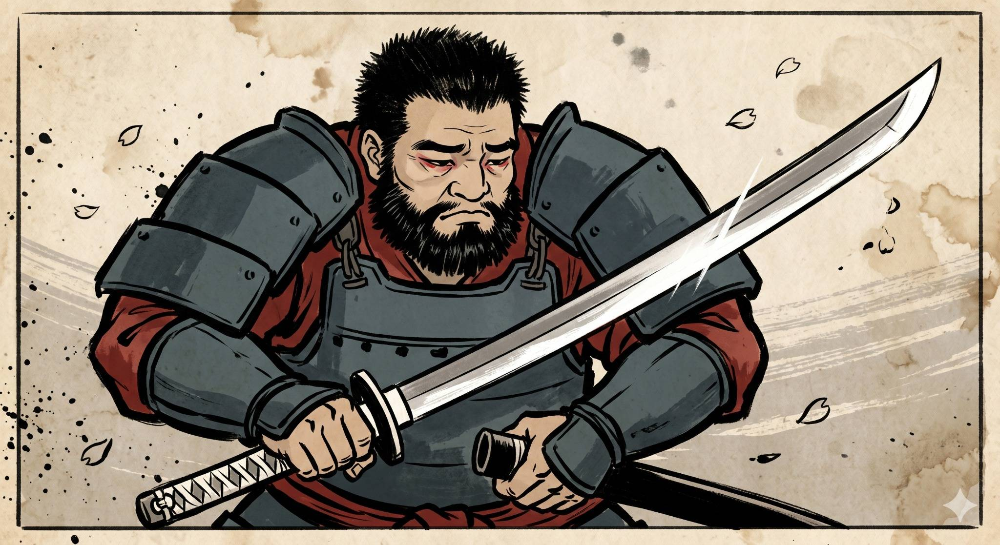
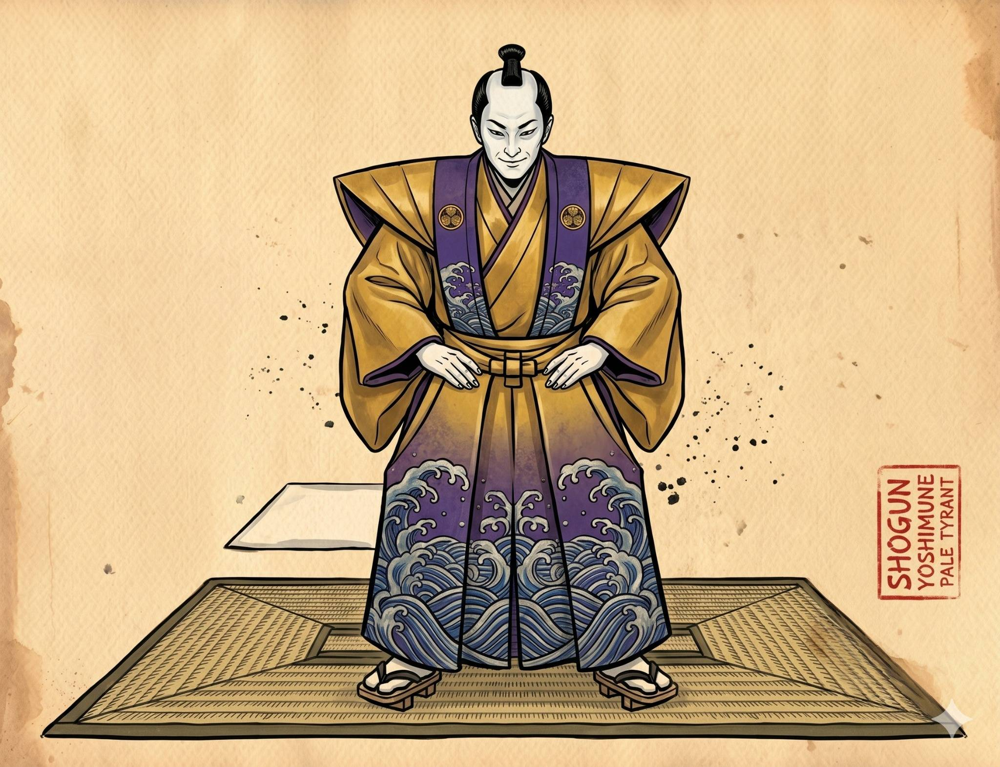
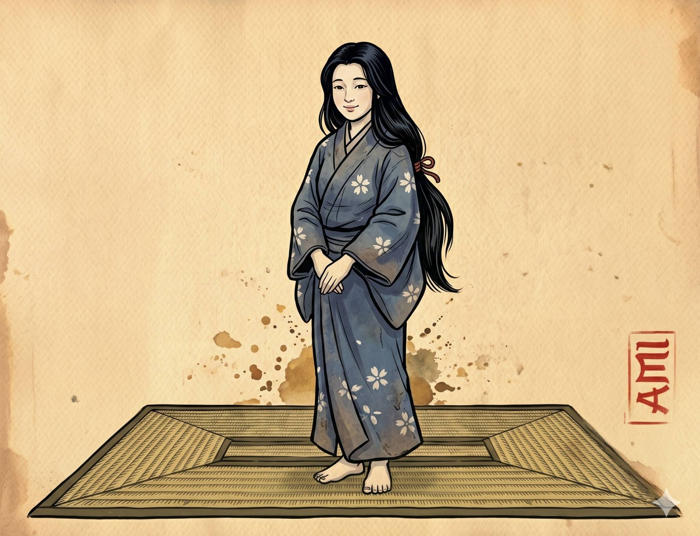

Stoic, selfless, and profoundly principled. A legendary warrior bound by honor, willing to sacrifice everything to protect the innocent.

Loyal, emotional, and burdened by grief. A former brother-in-arms transformed into the leader of rebellion.

Ruthless, manipulative, and cruel. A ruler obsessed with domination who governs through fear and dishonor.

Gentle, resilient, and deeply empathetic. A symbol of hope and emotional strength amidst tragedy and war.